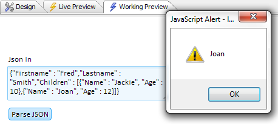

JSON, or Javascript Object
Notation, is simply a terse way of storing javascript objects. In many programming languages,
to create an object you must first create a variable and then create the children
of that variable independently. For example, you could define an
object named 'o' in javascript like this:
var o = new Object();
o.firstName = 'Selwyn';
o.lastName = 'Rabins';
|
Using this method, the children of the 'o' object
would need to be created one by one; each one including the name of
its parent object. This results in a lot of code that is often difficult to interpret.
In this case the object 'o' has a very simple name. However, it is
not be hard to imagine situations in which the object name is much
longer or where the programmer wants a child of the object to be an
array or an object in and of itself. JSON provides a compelling
alternative that makes this task straightforward. Rather than define
each child individually, all of the children that belong to an
object are enclosed in curly brackets. Each child in the object,
except for the last child, is then delimited using a comma.
var o = {
firstname: 'Selwyn',
lastName: 'Rabins'
}
|
The simplicity of JSON's format has made it
ubiquitous in Web application development. JSON is very frequently used for data storage, where
it is gaining in popularity over xml, and many websites return data in JSON format.
This makes it possible, for example, to pull news stories off the
web in json format, work with apps like twitter, or call external servers
and ask for things. Once you acquire this JSON it is then very easy to
manipulate. Among other things you can filter out fields, add
fields, or extract an individual element from the data. JSON is the ideal way for sending
complex data from the client to the server, or from the server to
the client. Having a good understanding of JSON is therefore very
helpful in building web applications.
In the javascript language JSON is processed
inline. This means that you can use JSON in javascript and it will
be automatically recognized by the javascript engine. You can add
objects, arrays, and literal values to your JSON data, write some
javascript code to build a given part of an object, and it will just
work. When the javascript engine comes across any JSON data it knows
that a sub-object is a sub-object, an array is an array, and a
literal value is a literal value. You do not have to parse JSON in
javascript.
Most of Alpha Anywhere's server-side code is
written in Xbasic, a language that does not support JSON natively.
However, Alpha Anywhere does support a lot of methods that work with JSON
and allow you to both import and export JSON to and from your
components. How do these methods work? When you create a JSON
object, the children of that object are read in Xbasic as a string.
The Xbasic methods then take that string, work against it, and return
either JSON or Xbasic. Alpha Anywhere's set of methods can do the
same thing for Xbasic objects, returning either JSON or Xbasic. This
gives you the ability to parse a string into an object and an object into a string.
For example, take the following Xbasic object:
dim o as p
dim o.firstName as c = "Selwyn"
dim o.lastName as c = "Rabins"
|
You could create an 'o' object like the one above in Xbasic.
It would work, but you would end up having to write a lot of unnecessary code
for each of the 'o' parent object's children. Include Alpha Anywhere's JSON
parse method, and you can easily simplify things by placing the data for 'o'
object's children into a JSON format:
dim o as p
o = json_parse("{firstName: 'Selwyn', lastName: 'Rabins'}")
|
|
The example below demonstrates how you can apply this
information in building a UX component
using Xbasic on the server-side that uses JSON. To be used as
Xbasic, JSON needs to be a string. For more information you can follow
this video
here.
|
Create JSON from Xbasic:
1. In Alpha Anywhere's toolbar click on the
Interactive Window button. This will open the Code
editor.

2. In the Code Editor, go to the Interactive tab
and define the following dot variable name 'pp' by entering this code. This is
an Xbasic object. Hit Enter at the end of every
line.
dim pp as p
pp.Name = "Fred"
pp.Age = 30
|
3. Now add ?json_generate(pp) to the end of the pp object. Hit
Enter again.
dim pp as p
pp.Name = "Fred"
pp.Age = 30
?json_generate(pp)
|
4. You should see a generated JSON representation of the pp object. You have
succesfully serialized the 'pp'
object into a JSON string.

In JSON objects start
with a curly bracket and end with a closed curly bracket. Inside the
object are name value pairs. All property names are double quoted.
In this object, for example, the property names are "Name", "Age".
JSON can also encode the logical values true and false. Add a new
'Married' property to your Xbasic code and set it to true 'pp.Married
= .t.'.
dim pp as p
pp.Name = "Fred"
pp.Age = 30
pp.Married = .t.
|
Now run this object again using ?json_generate(pp).
The generated JSON should look like this:
= {
"Name": "Fred",
"Age": 30,
"Married" :
true
}
|
In addition to creating JSON data from Xbasic you
can also instatiate an object from a JSON string. The following
example will demostrate how.
|
Create Xbasic from JSON:
1. In Alpha Anywhere's toolbar click on the Interactive
Window button. This will open the Code editor.
2. The Code Editor will open. Click the
New Script using Xbasic Editor button on the top
left of the Code Editor's toolbar.
3. This will open a new tab in the Code Editor. Enter the
following code. Hit Enter after every line.
dim txt as c
txt = <<%str%
{
"Name": "Fred",
"Age": 30,
"Married" : true
}
%str%
dim pp2 as p
pp2 = json_parse(txt)
debug(1)
|
Note: In Xbasic the angle bracket, angle bracket
<< defines a string whose definition expands over
multiple lines. Here we have defined all of our JSON data as an xbasic string
and have given that string a variable name of 'txt'. A
Xbasic object named pp2 is then created that takes as
its value the parsed txt variable.
|
4. The debug(1) has been added to the end of this code so we can see
the JSON data in the debugger. Click the lightning bolt
in the toolbar to run the code.

5. The Xbasic debugger will open. Type 'pp2'
into the Expression entry box at the bottom of the
debugger.

6. Hit Enter and then click the
expand or 'plus' button
, to the left of the
Expression box, to show all of the JSON data in the pp2 object.
The previous example showed how to parse a string
containing JSON data that contained simple literal values. However,
what if you wanted
to create sub-objects within your data? As the objects in the
examples above demonstrate, all properties in JSON are delimited
with a comma; except for the last property which has nothing after
it. As long as a property is delimited and has a property name in
double quotes followed by a colon, the definition can be an object,
array, or literal. To see how to create a sub-object in JSON that
can be used with Xbasic watch this
video, or follow the guide below.
|
Creating a Sub-Object in JSON to use with Xbasic:
1. In Alpha Anywhere's toolbar click on the Interactive
Window button. This will open the Code editor.
2. The Code Editor will open. Click the
New Script using Xbasic Editor button
 on the top
left of the Code Editor's toolbar.
on the top
left of the Code Editor's toolbar.
3. Enter the same code into the Code Editor that you did in step 3 of the
'Create Xbasic from JSON' example. The code should look like this.

4. Now place a comma after the "Married" property. Hit
enter and on the line below the "Married" property add a new property
name called "Address".
5. Place a colon next to the 'Address' and a set of curly
brackets. Inside the brackets add three more properties; a "Street" property,
"Number" property, and a "City" property,
dim txt as c
txt = <<%str%
{
"Name": "Fred",
"Age": 30,
"Married" : true,
"Address" : {
"Street" : "Main Street",
"Number" : 123,
"City" : "Boston"
}
}
%str%
dim pp2 as p
pp2 = json_parse(txt)
debug(1)
|
6. Now click the lightning bolt icon
in the Alpha
Anywhere toolbar to run this code. The debugger should open. type pp2 into the
Expression entry box at the bottom of the debugger and hit
Enter.
7. Click the Expand or plus button
to the right of
the Expression entry.

8. Click on the Address value to
expand the Address sub-object that you defined. You should see all of the JSON
data from the sub-object you defined inside of your Xbasic code.

Arrays in JSON start with a
square bracket [ and end with a square bracket
]. JSON arrays are base 0, meaning the first
element in a JSON array is 0, the second element is 1, the third element is 2,
and so on. This is different from Xbasic which is base 1. Arrays can contain
literal values or objects themselves. This example will show how to add an array
property to your JSON data named "Children", to be used in an Xbasic object
named pp2. This array will use objects as its elements. The first element in the
array will be this object {"Name" : "John", "Age" : 3} which has the
"Name" of "John" and an "Age" of 3. Like all objects, each of the properties
within this object are delimited by a comma, with the exception on the last
property in the object. For more information on the steps that follow watch this video
|
Creating an Array in JSON to use with Xbasic:
1. In Alpha Anywhere's toolbar click on the Interactive
Window button. This will open the Code editor.
2. The Code Editor will open. Click the
New Script using Xbasic Editor button
on the top
left of the Code Editor's toolbar.
3. Enter the following code into the New Script page in the Code Editor.
dim txt as c
txt = <<%str%
{
"Name": "Fred",
"Age": 30,
"Married" : true,
"Address" : {
"Street" : "Main Street",
"Number" : 123,
"City" : Boston
},
"Children" : [
{"Name" : "John", "Age" : 3}
]
}
%str%
dim pp2 as p
pp2 = json_parse(txt)
debug(1)
|
4. Create two more elements for the "Children" array. As with objects, each
element in the array should have a trailing comma;
excepting the last element which has no comma. The result should look something
like this:
"Children" : [
{"Name" : "John", "Age" : 3},
{"Name" : "Sally", "Age" : 5},
{"Name" : "Kim", "Age" : 7}
]
|
5. Now click the lightning icon in the toolbar
and run the code. The Debugger should open. Enter
pp2 into the Expression box at the bottom on the
debugger.

6. Click the Expand or 'plus'
button next to the Expression box to see all of the properties in the pp2
object.
7. Click on the Children array property that you
defined. The elements within that property will be displayed.

8. Now click on one of the elements in your Children array in
the Value list. You should be able to see the
object properties for each element.
This example has shown how to create a complex Xbasic
object using data parsed from JSON that includes an array. You can
also pass things from Xbasic into JSON using json_generate().
Here is How.
|
Show your Xbasic object's data in JSON form:
8. Remove the debug(1) line in your code and add this to the end
instead. This code will output the JSON from the pp2 Xbasic object using the
json_generate() method. The showvar() method will display the result.
dim txt2 as c
txt2 = json_generate(pp2)
showvar(txt2)
|
9. Click the lightning icon
to
run the code. A Variable dialog will open
displaying the pp2 objects data in JSON form. The result should look something
like this:

So far, this guide has shown how to serialize
objects, but you can also use Javascript on the client-side to work
with JSON. This example will demonstrate how you can incorporate
JSON into a UX component and then manipulate the JSON data using
Javascript. For more information watch this video
Part 1 and
Part 2. To recap, we have
covered the following about JSON objects so far. A JSON object
starts and ends with curly brackets and has as many name value pairs
as you want within those
curly brackets. Each name value pair is delimited with a comma. Each
entry can be an array, a literal, or an object. In this way it is
possible to represent a very
complex object using JSON while still maintaining the ability to
easily read and understand it
|
Output a JSON on the Client-side in a UX Component:
1. In the Web Projects
control Panel click the New Component or File
button. In the New File dialog select Web Component
and click Next. Select UX
and click Next again.
2. On the Select UX Component template page
leave the Start with a blank UX Component radio button selected and click
OK.
3. On the Design tab of the UX Builder open the
UX Controls page from the menu list.
4. On the Controls page, open the Other Controls dropdown that appears
in the Design menu. Double click on the [Button]
control option to add it to your UX component.
5. Add a
[Static text:] control to your component in the same
way.
6. You can arrange the controls using the up and down arrows in the toolbar such that
they go [Button], [Static Text:].

7. Click on the [Button] control in your list to highlight it. Go over
to the Control Properties list to the Right. Find Button Properties.
8. In the Button Properties section find the Button text property and change
the button text to 'Objects'.
9. Scroll down the Properties list until you reach the Javascript
(Touch. Mouse. Pointer Events) section.
Click the button  next to the click property.
next to the click property.
10. The Edit Click Event dialog will open. Click
the Text mode radio button. In the Javascript
Attribute work area write objectsTest(); and click
Save.
11. Now Click on the [Static Text:] control that you created. In the
Properties menu under Static Text Properties find the Static text property.
12. Next to the Static text property enter the following html <div
id="msg1"></div>.

13. Still in the Controls page, find the Code dropdown in the menu and under
it click the Javascript functions option. Enter the
following code to define the objectsTest() function.
function objectsTest() {
var obj = {
"Firstname" : "Fred",
"Lastname" : "Smith",
"Children" : [
{"Name" : "Jackie", "Age" : 10},
{"Name" : "Joan", "Age" : 12}
]
};
var msg = JSON.stringify(obj);
$('msg1').innerHTML = msg;
}
|
Note: Here we have designed a button that will create an object in Javascript, serialize
that object to JSON, and then print the JSON data out. The var
obj is a javascript variable object that is initialized by
passing into it a JSON string. This is the
equivalent on the Xbasic side to using JSON parse to instantiate an xbasic
object from a JSON string. In this example we are initializing an
object using an object literal. An object literal and JSON look
similar but are not technically identical. Our object literal
contains a Firstname property, Lastname property, and
a Children property which is an array containing additional
object properties. After defining the object literal, a call javascript method,
JSON.stringify(), is used to
serialize the object into a string with the name msg1. Using
innerHTML, this msg1 string is then inserted into the text of
the div that we defined for the [Static text] control in our
component. This means that when the 'Objects' button is
clicked, using javascript, the [Static text] control will be filled
in with html that displays the JSON data.
|
14. Go to Working Preview and click
on the 'Objects' button.

Create a Button that Parses JSON data:
1. In the Web Projects
control Panel click the New Component or File
button. In the New File dialog select Web Component
and click Next. Select UX
and click Next again.
2. On the Select UX Component template page
leave the 'Start with a blank UX Component' radio button selected and click
OK.
3. On the Design tab of the UX Builder open the
UX Controls page from the menu list.
4. On the Controls page, go to the Data Controls
dropdown section in the design menu and double click on the
[TextArea] control option.

5. In the New Control dialog that opens select
'Create a single new control'. Give the control the
Name jsonIn and the
Label Json In. Under Data Type select
Character and click OK.
6. On the Controls page, open the Other Controls dropdown that appears
in the Design menu. Double click on the [Button]
control option to add it to your UX component.
7. Select the [TextArea] control that you
labeled Json In. Look to the right. In the Field
properties section inside the Control Properties list, find the
Default value property.
9. Change the Default value to be this string of JSON.
{"Firstname" : "Fred","Lastname"
: "Smith","Children" : [{"Name" : "Jackie", "Age" :
10},{"Name" : "Joan", "Age" : 12}]}
|
10. Select the [Button] control in the control list. In the Properties list on the right find the
Button Properties section.
11. In the Button Properties section, change the Button text property to read
Parse JSON.
12. Scroll down to the Javascript (Touch. Mouse. Pointer Events) properties
section and click the button next to the 'click' property.
13. The Edit Click Event Editor will appear. Click on the Text Mode radio
button. In the Javascript Attribute work area type parseJSON(); and click
Save.
14. In the design menu open the Code dropdown
and click on the Javascript functions option. Under the objectsTest()
function that you defined earlier write the following code.
function parseJSON() {
var json = {dialog.object}.getValue('jsonIn')
var obj = JSON.parse(json);
alert(obj
['Children'][1]['Name']);
}
|
Note: Just like on the Xbasic side where we use
json_parse and json_generate there exists similar features in
javascript on the client-side. In this example, the parse JSON
button is taking a string of JSON from a text area field , parsing it ,
and then doing an alert from the name field of the second item in the
children array. Square brackets are used for syntax in order to read a value
in the 'Children' array, that was defined in our JSON data . You can
also use dot notation to accomplish this, for example obj.children.
The [1] next to the Children array indicates that we are calling the
second element of that array. Javascript arrays are zero based,
meaning the first item in the
array is always 0 the second item is 1. The second element, in the
JSON data here, is an object containing a "Name" property, "Joan",
and an "Age" property, '12'. The ['Name'] that follows the [1] in
our code means that we are only interested in returning the "Name"
property. When you run this component and click the parse JSON button,
an alert should return "Joan"
|
15. Now go to Working Peview and click the Parse JSON button.
You should see an alert pop up giving you the name of the second element in the
Children array from the JSON data you defined for the Text area control.

JSON is useful for passing information form the
client to the server. One way to accomplish this is by passing
information into an Ajax callback. In this case, you might have a button that is tied to an AJAX callback which
turns around and calls up some Xbasic. You could then add some of Alpha
Anywhere's JSON functions to that Xbasic code to allow you to go out, get JSON data from an external source, and then
return that data to your component in Xbasic.
Xbasic is currently the coding language on the
server. Sometimes you need to turn Xbasic code into something the client side
browser can recognize, i.e Javascript. The easiest way to get into the client is
through Javascript. When someone
clicks a button do an Ajax callback, that callback is handled in Xbasic, which does
some manipulations and then returns an object to the
client browser in the form of a string. The browser, which is waiting for the response,
then takes that object and generates some actual JSON, that it returns to the client.
When you want to parse a complex set of data, you can parse JSON data back into
an ajax
callback and, on the Xbasic side, parse that data and extract values
from it. For more information on how to do this watch these videos
Part 1 and
Part 2 or follow the examples below.
|
1. In the Web Projects
control Panel click the New Component or File
button. In the New File dialog select Web Component
and click Next. Select UX
and click Next again.
2. On the Select UX Component template page
leave the 'Start with a blank UX Component' radio button selected and click
OK.
3. On the Design tab of the UX Builder open the
UX Controls page from the menu list.
4. On the Controls page, go to the Data Controls
dropdown section in the design menu and double click on the
[TextArea] control option.
5. In the New Control dialog that opens select
'Create a single new control'. Give the control the
Name jsonIn and the
Label Json In. Under Data Type select
Character and click OK.
6. Select the [TextArea] control that you
labeled Json In. Look to the right. In the Field
properties section inside the Control Properties list, find the
Default value property.
7. Change the Default value to be this string of JSON.
{"Firstname" : "Fred","Lastname"
: "Smith","Children" : [{"Name" : "Jackie", "Age" :
10},{"Name" : "Joan", "Age" : 12}]}
|
8. On the Controls page, open the
Other Controls
dropdown in the menu and double click on [Button] control to add it to the UX
component.
9. With the Button control selected, look in the control
Properties list
on the right. Under the Button Properties section, find the
Button text
property.
10. Change the Button text property to read 'Make and Ajax Callback'
11. Scroll down the Properties list until you reach the Javascript (Touch. Mouse. Pointer Events) section.
Click the button next to the click property.
12. The Edit onClick Event dialog will open. Select the
Action Javascript radio
button option at the top and click the Add New Action button.
13. In the Action Javascript Select and Action dialog select
Action Callbacks and Javascript from the Categories list on the left.
14. From the Actions: list on the right select Ajax Callback. And click
OK.

15. An Action Javascript Ajax Callback dialog will open.
16. In the Ajax Callback section of the dialog, leave the
Callback type property set to
InternalXbasicFunction and type xb next to the
Function name property.
17. In the Advanced section of the dialog, find
the Additional data to submit property and next to it type additionalAjaxData().
Click OK, OK, and
Save.

Note: The Additional data to submit property
represents the data that is going to be submitted from the client
side to the server side. This property allows you to use an Xbasic
function to return data. You can specify additional data to submit
in the Action Javascript Ajax Callback genie. This data will be
available inside your custom event handler, in this case the click
event. What is expected from the Additional data to submit property
is a Query string, name value pairs delimited with an & sign, type
in a Review help text in Action Javascript Ajax Callback Action.
This feature is useful when you want to generate arbitrary information
on the client side.
|
18. Click on the Code
dropdown and select Javascript functions. In the
Javascript workspace add the following code.
function
additionalAjaxData() {
var json = {dialog.object}.getValue('jsonIn');
//return '__additionalData=' + json;
var data = A5.ajax.buildURLParam('__additionalData',json);
return data;
}
|
Note: Here we are reading the value that is in
the text area field and sending back to the server a name value pair.
This name value pair is
formatted like a query string. The
value part of the name value pair needs to be URL encoded. Inside
the Alpha JS library there is a buildURL function that takes its first argument as name
and its second argument as a value. The buildURL function then encodes that value.
|
19. From the Code dropdown click on the
Xbasic functions option. Add the following Xbasic.
function xb as c (e as p)
dim json as c
json = e.__additionalData
dim p as p
p = json_parse(json)
dim msg as c
msg = "Message from Xbasic. The name of the second
child is: " + p.children[2].name
dim js as c
js = "alert('" + js_escape(msg) + "');"
xb = js
end function
|
This code takes the string of JSON data that we
defined earlier and sends it back to the server as part of an ajax
callback. It then parses this information on the server using the
parse function. Afterward, it extracts the name field, from the second array item in the childrens array,
and uses this to construct an object that is fed into an alert message
and passed to the client.
Going line by line this is what this looks like.
The xb in this case is the actual Xbasic function that will handle
the Ajax callback. In the line dim json as c, we create an
Xbasic character variable called json. This variable is then
set to = e.__additionalData. The e is a pointer
variable that is passed into the xb function. It points to an
object that contains a property called additionalData, which
is a string that is sent back as part of the Ajax callback. The p
in the line dim p as p defines an second Xbasic pointer
variable that is set to =json_parse(json). The json_parse()
function parses a string, in this case the json string that
we defined, in JSON format and returns an Xbasic variable.
Next we create a javascript
response to send back to the client. In dim msg as c we
create yet a third Xbasic variable, a character variable called
msg, that contains a string and the second element of the
children array; the array that was included in the string that we
parsed. In Xbasic arrays are 1 based, meaning the first element in
the array is [1] and the second element is [2]. This is unlike
Javascript which is 0 based. When msg is defined it is then
passed into a js object that is tied to a javascript alert. When you return a string,
you need to make sure it is Javascript safe. In dim js as c,
a js object is created that is set to be an alert message
that to be sent back to the client. Xbasic still views this alert
message as a string, but javascript will interpret it as javascript.
The line xb = js is equivalent to a return statement
in javascript. In this case we are returning the js string to
the javascript that operates the client side code.
|
20. Now go to Working Preview and click the Make Ajax Callback
button. You should see something like this:
Use JSON to send data from the Server to the Client:
1. In the Web Projects
control Panel click the New Component or File
button. In the New File dialog select Web Component
and click Next. Select UX
and click Next again.
2. On the Select UX Component template page
leave the 'Start with a blank UX Component' radio button selected and click
OK.
3. On the Design tab of the UX Builder open the
UX Controls page from the menu list.
4. Open the Other Controls dropdown and double click on [Button] to add a
button to the UX component.
5. Click on the [Static Text] control in the Other Controls dropdown to add a
static text control to the UX component.
6. Select the Static test control and look at the Control Properties list. In
the Static Text Properties section change the Static text property to this:
7. Select the button that you added to you component. Go to the the
Properties list on the right.
8. In the Button Properties section change the Button text property to read
Fetch data from server.
9. Go to the Javascript (Touch. Mouse. Pointer Events)
section of the Properties list and
choose the click property
10. The Edit Click Event dialog will open. Leave the Action Javascript radio
button selected.
11. Click the Add New Action button. The Action Javascript - Select an Action
dialog will open.
12. In the Categories: list select Ajax Callbacks and Javascript option. In
the Actions: list select Ajax Callback. Click OK.
13. The Action Javascript - Ajax Callback Action genie will appear. Set the Function name
property to be
xb2
14. Click the button
next to the
After callback complete Javascript property.
15. The After Callback Complete Javascript dialog will open. Add a function
called expandTemplate(); and click OK
and OK and OK
again. Save.
Note: As you probably know Ajax is asynchronos. In
creating this Ajax callback this means that you can't have the function,
expandTemplate(), be triggered immediately. As a result, in this example you
can not
add more actions to the Edit Click Event dialog
unless you click the Run actions
synchronously button at the bottom of the dialog. In this example, we are
leaving this unchecked.
|
16. Open the Code dropdown and click on the Javascript functions page. Enter the following code:
function expandTemplate() {
var ele =
$('msg2');
//A5.u.element.setContent() is like setting the .innerHTML of ele,
but preserves drag scroll behavior
A5.u.element.setContent(ele, 'this is the expanded template');
}
|
Note: Instead of setting
.innerHTML
directly we are using a helper function called
A5.u.element.setContent(). This is the preferred way
of writing this code if there is a possibility that drag
scrolling is enabled. If the
element that you are setting the .innerHTML on
had grad scrolling enabled, and you set innerHTML
directly, it would destroy the drag scrolling
capability. Moving on, after the client receives
the data we want to format
it:
|
17. Save your Component and go to the
Web Projects Control Panel.
From the Tools
dropdown select the Open Template Tester
window. On JSON tab click
Load Example.
18. From the Select Example list choose the
Simple object, simple template object. Click
OK.
19. Want JSON that is standards compliant. JSON
standard required double quotes. Highlight the
inserted JSON and hit the
Reformat JSON button.
20. Go to the Template page and change the html
to read the following:
Hello <b>{firstname}</b> <span style="color:blue;">{lastname}</span>
|
21.
Click the Show Javascript
button. This will show the Javascript
that takes data and expands the html. Copy
this javascript to the clipboard.

22. Go to the Code
dropdown again and open Javascript functions.
Paste the Javascript into the expandTemplate
function that you defined.
function expandTemplate() {
var _d = {
"firstname" : "Fred",
"lastname": "Smith"
};
var _t = [
'Hello <b>{firstname}</b>
<span style="color: blue;">{lastname}</span>'
].join('');
var settings =
{
template: _t,
partials: ''
}
var html =
A5.u.template.expand(_d,settings);
var ele =
$('msg2');
A5.u.element.setContent(ele, 'this is the expanded template');
}
|
23. To get data returned by Xbasic
callback open the Xbasic
function page from the Code dropdown
list. Enter the following code:
function xb2 as c (e as p)
delete p
dim
p.firstname as c = "Fred"
dim
p.lastname as c = "Smith"
dim
p.date as c = "" + date()
dim
json as c
json
= json_generate(p)
dim
js as c
js =
"{dialog.object}._data = " + json +";"
xb2 =
js
end function
|
In this code dim json as c
creates an Xbasic object. This object, json,
is then set to be =json_generate(p). The
json_generate() function takes a variable, in
this case a variable called p, and returns JSON
data in this object in the form of a string.
Xbasic now has a string in Xbasic that can read
and manipulate. Next we create an Xbasic object
named js, in the line dim js as c,
and set this equal to xb2. This code effectively
places the JSON data inside a temporary
variable inside the UX component.
|
24. Go to the Working
Preview tab. Click the Fetch data from
server button.

25. Now back to your Javascript functions page
and change the expandTemplate() function
to include d = {dialog.object}._data;
26. Also change A5.u.element.setContent(ele,
'this is the expanded template'); to read A5.u.element.setContent(ele,
html)
function expandTemplate() {
var _d = {
"firstname" : "Fred",
"lastname": "Smith"
};
_d = {dialog.object}._data;
var _t = [
'Hello <b>{firstname}</b>
<span style="color: blue;">{lastname}</span>'
].join('');
var settings =
{
template: _t,
partials: ''
}
var html =
A5.u.template.expand(_d,settings);
var ele =
$('msg2');
A5.u.element.setContent(ele, html);
}
|
Using A5.u.element.setContent()
is like setting the .innerHTML of ele.
Unlike .innerHTML, A5.u.element.setContent() preserves
the drag scroll behavior. The _d in this
code represents the data that the template will
expand. Setting _d to {dialog.object}._data;
makes _d draw its data from the Xbasic
function definition we defined in step 23. When
you run the component now you should see that
the same data that is defined on the
server-side, i.e in Xbasic.
|
27. Go to Working Preview and click the Fetch
data from server button again:

28. Go back to the Design
tab. To make sure that your code is calling data
from the server, reopen your Xbasic functions
page in the Code dropdown.
29. Change the "Fred" and "Smith"
in your xb2 function to something different,
like "Salmo" and "trutta" or
anything.

30. In the Code dropdown open the Javascript
functions page again.
31. Now add something to consume the date. Change this
line of code 'Hello <b>{firstname}</b> <span
style="color: blue;">{lastname}</span>' by
adding 'on {date}.'
'Hello <b>{firstname}</b> <span
style="color: blue;">{lastname}</span> on {date}.'
|
32.
Go to Working Preview and click button.

To summarize, the Ajax Callback can be made to the server.
The server Xbasic is now free to use any Xbasic code that it wants to compute
data to send back to the server. Data that gets sent back is encoded
on the server-side into an Xbasic object, in this case a p variable.
This variable then gets converted into a JSON string which gets sent back
to the client
|
The client-side template tester
window is very useful in laying out JSON data on the client side.
The user interface for the Template Tester is resizable and has
separate tabs for JSON Data,
Template, Javascript and
CSS.
As you edit in any of these windows the template preview is
automatically updated in the right part of the window.
While the Template Tester does help in presenting
JSON data from the server-side on the client, It is still necessary
to define some xbasic and javascript in order to use a specific set
of JSON data. When editing Xbasic or Javascript code, html,
and JSON it is often helpful to be able to see
the start and end of different opening and closing 'pair'
delimiters. For
example in an Xbasic function call, highlighting
the opening an closing parentheses. Or in a
Javascript function, highlighting the opening
and closing curly braces. In some HTML text, the
opening and closing tags (e.g. <div>, <body>,
<p> , etc.). Once a 'pair' has been identified,
keyboard shortcuts (Control ] and
Control-Shift ] ) allow you to quickly
move focus from the start of the 'pair' to the
end of the 'pair' or to select all of the text
inside the 'pair'. For more on this
watch this video.
To follow the advanced example below watch the
following videos
Part 1,
Part 2,
Part 3,
Part 4 or simply
download the component.
|

Create JSON from the Server side presented in
an Advanced Template:
1. In the Web Projects
control Panel click the New Component or File
button. In the New File dialog select Web Component
and click Next. Select UX
and click Next again.
2. On the Select UX Component template page
leave the 'Start with a blank UX Component' radio button selected and click
OK.
3. On the Design tab of the UX Builder open the
UX Controls page from the menu list.
4. Open the Other Controls dropdown and double click on [Button] to add a
button to the UX component.
5. Click on the [Static Text] control in the Other Controls dropdown to add a
static text control to the UX component.
6. Select the Static test control and look at the Control Properties list. In
the Static Text Properties section change the Static text property to this:
7. Select the button that you added to you component. Go to the the
Properties list on the right.
8. In the Button Properties section change the Button text property to read
Fancy Report. Save your component.
9. In the Web Projects Control
Panel click on Tools and select the
Open Template Tester
window from the dropdown.
10. Click Load Example. From the
list of choices select the 'Same as previous example, but
with CSS to style the output' option.
11.
Copy JSON data to the clipboard.
If you have completed the
JSON and sending data from Server to Client guide you will
notice that this template contains slightly more complex JSON data.
As you can tell from the square starting brackets
[ ], this JSON object is an array. Each item in the array is
filled with an object whose name starts with 'orderId:'. The
orderItems property inside this object is itself an array
that contains objects as properties. Because there is this much
nested data, computing this on the server is the appropriate thing to do.
We then want to consume the JSON data on client side and output html.
The
Javascript function that gets called by the template
Template uses some CSS, also defined in the genie, to
take a simple example and expand it.
|
12. Go back to your
component and, on the Controls page, select the
button control your created.
13. Scroll down the Properties
list to the Javascript
(Touch, Mouse, Pointer Events) section.
14. Click the button
next to the click
property.
15. The Edit Click Event dialog will open. Leave the Action Javascript radio
button selected.
16. Click the Add New Action button. The Action Javascript - Select an Action
dialog will open.
17. In the Categories: list select Ajax Callbacks and Javascript option. In
the Actions: list select Ajax Callback. Click OK.
18. The Action Javascript - Ajax Callback Action genie will appear. Set the Function name
property to be xb3
19. Click the button
next to the
After callback complete Javascript property.
20. The After Callback Complete Javascript dialog will open. Add a function
called expandTemplate2(); and click OK
and OK and OK
again. Save.
21. Go to the Code dropdown and
open the Xbasic functions page. Define a function called
xb3 using the following code:
function xb3 as c (e as p)
dim json as c
json = <<%txt%
//Insert Template JSON here
%txt%
dim js as c
js = "{dialog.object}._data2 = " + json +";"
xb3 = js
end function
|
22. Paste the JSON you copied
from the template into your xb3 function
definition between json = <<%txt% and
%txt%
Here we are using <<%txt% and
%txt%
delimeters. If you use the specify <<%json%...
%json% delimiters to enter a long string of JSON data,
the Xbasic editor will perform real-time validation on the JSON
data. For example, in the image below, the JSON has an error because
of the trailing comma after the last property (age: 23). Notice the
squiggly red line indicating the error.

If you click on the error indicator
you will see the error message.

in a realworld example you would do data querys to get the JSON
information
Take this JSON and put it into a temporary variable called _data2
|
23.
Go to the Javascript functions page. Define the function
expandTemplate2() using this code.
function expandTemplate2() {
var _d = {
"firstname" : "Fred",
"lastname": "Smith"
};
_d = {dialog.object}._data2;
var _t = [
//Insert Javascript here
].join('');
var settings =
{
template: _t,
partials: ''
}
var html =
A5.u.template.expand(_d,settings);
var ele =
$('msg3');
A5.u.element.setContent(ele,
html);
}
|
24. Go back to
Open Template Tester
window and click the
Show Javascript
hyperlink in the lower left of the dialog. Find
the template section of the javascript marked
var _t = [
25. Copy the Javascript between var
_t = [ and ].join(''); in the
Open Template Tester
window.

26. Open the
Javascript functions
page in the Code dropdown. Paste the code you
copied inside the expandTemplate2()
function.
27.
Go back to the Open Template Tester
window. Open the Javascript tab and copy
the javascript function displayed in the tab to clipboard.
28. In your component, open the
Code dropdown in the Design tab. Go to the
Javascript functions page and paste the function
you copied above the expandTemplate2()
definition.
29. Open the
Open Template Tester
window. Click on the
CSS tab and copy
all of the CSS code.
30. Open your component page. Go to
the Properties page and find the CSS properties
section.
31. Click the button
next to the Local CSS definitions,
click the code tab at the bottom of the
CSS Editor[] and
paste all of your CSS inside the editor.
32. Now go to
Working Preview.
You should see something like this:
33. Open your component and go to
the Xbasic functions page in the Code dropdown.
34.
Try adding to or altering the JSON data that is
nested inside your Xbasic function.
To summarize, an ajax callback can go to the server, get a very
complex set of data represented as a JSON object, and send that data back
to the client. Then using the templating features on the client
side you can use that data to create a very rich layout from that
JSON data. JSON can
be used on the server side to serialize xbasic objects. You can use
json_generate to serialize Xbasic objects into json data and
json_parse to parse json data back into xbasic objects. On
the client side
you can use json_stringify and json parse to serialize objects into json strings and to parse json strings into javascript objects.
json is the perfect mechanism for parsing information from the
client side to the server side or the server side to the client
side.
|
The javascript object notation that Xbasic uses to parse JSON
is not as full as the javascript object notation that exists in Javascript
itself. Javascript can process functions as properties directly from JSON.
In comparison, Xbasic requires a string of JSON to be able to parse data, which
it then feeds into a browser. Converting everthing, including all of the
javascript extras, into string format prevents the JSON from blowing things up
when it is used in Xbasic. On the other hand, not being able to use all of the
types of data that can exist inside of JSON leads to a great loss in potential
capability for an application. For example, say you had a completed date object in Javascript
that was stored in JSON. If you transformed that JSON into a string, you would end with
something that is transportable but that would not be transported. It would lose
all functionality. The way Alpha Anywhere gets around this problem is through
special Xbasic tags, flags, and nulls; markers that indicate logic that exists
inside of JSON data. It is these flags that allow Xbasic to do everything with
JSON that can be done in Javascript. Alpha Anywhere simply ooks for parts of
strings generated from JSON and, if it sees any, outputs
them as javascript. For example: Here dim o as p is an xbasic
object. The o.myFunc = "function(){...}" defines a string
dim o as p
o.myFunc = "function(){...}"
|
Below is the output from the
o.myFunc function produced by json_generate(). As you can
see from the single quotes around 'function(){...}', the
output is a string. Even if the flag in the generate function
was false .f. you would get the same thing; a string will
produce a string. If you ran this in javascript it would also view
it as a string.
?json_generate(o,.t.)
"{myFunc: 'function(){...}'}"
|
This is the same 'o' xbasic object
function. However, here the function is marked as a javascript
function.
o.myFunc = "{javascript}function(){...}"
|
This time, when we run the function
in json_generate(), no single quotes appear. Javascript will view
this as a viable function.
?json_generate(o,.t.)
"{myFunc: function(){...}}"
|
If you were to turn the boolean flag
in json_generate to false .f. then you would again end up
with a string, as shown below. This string would include the
bracketed {javascript} marker inside of it.
?json_generate(o,.f.)
"{myFunc: '{javascript}function(){...}'}"
|
|
There are several ways to use Xbasic to extract information from
JSON data.
|
For JSON data that contains objects:
1. First define a JSON object that
lives in the extension namespace inside of
Xbasic.
dim
jso as extension::JSON
|
2. Next equate the
object with the JSON data you wish to query using setJson().
You can read this data in from a file. Here we are going against
JSON data that contains an object.
jso.setJson("{\"firstname\":\"john\",\"lastname\":\"public\"}")
|
3. These different methods will return the following results:
"{\"firstname\":\"john\",\"lastname\":\"public\"}"
|
|
? jso.getLength() |
= 2
|
|
? jso.getIndexed(0) |
= "john"
|
|
? jso.getIndexed(1) |
= "public"
|
|
? jso.nameIndexed(0) |
= "firstname"
|
|
? jso.nameIndexed(1) |
= "lastname"
|
|
? jso.getProperty("firstname") |
= "john"
|
|
? jso.getProperty("lastname") |
= "public"
|
|
? jso.isArray() |
= .F.
|
|
? jso.isObject() |
= .T.
|
For JSON data that contains arrays:
1. First define an JSON object that
lives in the extension namespace inside of
Xbasic.
dim jsa as extension::JSON
|
2. Next set the
object to be the JSON data that contains the array you wish to query using setJson().
You can also read this data in from a file.
jsa.setJson("[\"one\",2,true,{\"firstname\":\"john\",\"lastname\":\"public\"}]")
|
3. These different methods will return the following results.
"[\"one\",2,true,{\"firstname\":\"john\",\"lastname\":\"public\"}]"
|
|
? jsa.getLength() |
= 4
|
|
? jsa.getIndexed(0) |
= "one"
|
|
? jsa.getIndexed(1) |
= 2
|
|
? jsa.getIndexed(2) |
= .T.
|
|
|
|
|
jselem = jsa.getIndexed(3) |
|
|
? jselem.getLength() |
= 2
|
|
? jselem.getJson() |
= {"firstname":"john","lastname":"public"}
|
|
|
|
|
jselem.setProperty("middlename","Q") |
|
|
? jselem.getJson() |
= {"firstname":"john","lastname":"public"
, "middlename" : "Q"}
|
BSON was created by the developers of Mongo
DB. BSON is JSON data that is converted to binary.
|
Interrogating BSON data from JSON:
1. First define an BSON object that
lives in the extension namespace inside of
Xbasic.
dim bso as
extension::BSON
|
2. Next set the BSON object to include the
JSON data you wish to query using setJson().
bso.setJson("[\"one\",2,true,{\"firstname\":\"john\",\"lastname\":\"public\"}]")
|
3. Call your BSON object as BSON data using getBson().
dim
bs as b = bso.getBson()
|
4. You can look at the binary:
= 0000 : 4c
00 00 00 02 30 00 04 00 00 00 6f 6e 65 00 10
0010 : 31 00 02 00 00 00 08 32 00 01 03 33 00 2e 00 00
0020 : 00 02 66 69 72 73 74 6e 61 6d 65 00 05 00 00 00
0030 : 6a 6f 68 6e 00 02 6c 61 73 74 6e 61 6d 65 00 07
0040 : 00 00 00 70 75 62 6c 69 63 00 00 00
|
5. You can Query against this data as well.
Getting JSON Back from BSON:
1. Define a JSON object that lives in the extension namespace inside of
Xbasic. Put BSON after extension. Only BSON knows how to deserialize BSON.
dim bso2 as
extension::BSON
|
2. Now set the JSON object against the BSON data you want to convert to JSON
using setBson().
3. Call your JSON object from the BSON data using getJson().
4. Result.
= [ "one",
2, true, { "firstname" : "john", "lastname" : "public" } ]
|
You can create reports from JSON data in Alpha
Anywhere. This is useful when you want to use data on a report that comes from a
web service off a website or when you want to build data without
involving a traditional data source like SQL.
|
Create a Custom Report using simple JSON data:
1. In the Web Projects Control Panel menu click on the
Reports(Project) option.
2. Click the
New component or file button. Select
Create New Report from the list that appears.
3. The New Report dialog will open. Specify a
<Custom Data Source>.
4. The Specify Custom Data
Source dialog will open. In the Function name
property, specify the name of the Xbasic function that will return the
data to be printed by the report. Here the Function name is MyJsonReport.
5. Under the Data format
property dropdown select JSON.
The Xbasic function can return a string of
data in one of two formats, Delimited and
JSON.
6. Click the button next to the Local
Xbasic definition property. Click the Code Editor
tab in the Local Xbasic Function Definition dialog
when it opens.
7. Add the following Xbasic function containing a simple JSON array. Make
sure the function name defined in the function, in italics, is the same as the
Function name you defined in Step 4. When you are done
Click OK.
function MyJsonReport as c(e as p)
MyJsonReport = <<%json%
[
{"Firstname" : "Fred", "Lastname" : "Smith"},
{"Firstname" : "Harry", "Lastname" : "Jones"}
]
%json%
end function
|
Note: Since no schema is supplied in this
function, the data are all considered to be character type of length 1024 characters. While the advantage of this format is
that is extremely simple, it does mean that you will need to adjust the size of each field you place on your report because its default size will likely be too large.
Notice that the function takes a single input parameter, e. The
e object that is passed into the function includes the value of any
Arguments that were passed into the report.
When you close the Local
Xbasic Function Definition dialog you might notice the
Arguments property. Arguments
are used for when you want to filter the contents of a
report. For example, if you wanted a report on such and such
a state in the United States, this might involve creating an
argument. If you specified that the <Custom Data Source> uses an argument called
whatCountry. Your Xbasic function can reference the
value in this argument as follows:
dim country as
c
country = argVal(e.arguments,"whatCountry")
|
|
8. Click OK to close the Specify Custom Data
Source dialog. The Report Workspace will open up with <Custom Data
Source> written in its title bar. Save your
Report.
9. Open the DragDrop List. From
the Toolbar
9. In the DragDrop List find the
section starting with a5_temp_custom_.... and underneath it the two
object properties contained in your JSON array, i.e firstname and lastname.
10. Add these object properties to you report by dragging an
dropping them into the Report Header.
11. The Drop Fields dialog will
appear. Click OK. Afterward a checkmark will appear
next to each property used.
12. Drag the second, non-bold, part of the Firstname and
Lastname properties down into the Detail section of the Report. Like
this:
13. Click the Print preview the current Report button in the
toolbar.
14. Now you should see the JSON data from the array appear in
Report format.

You might want the string you return to be an
object with two object properties, schema and data. The schema object
property
defines the schema of the data (for example, field type, size, etc.)
and the data property is an array of JSON objects that define the
data for the report. For example:
function myjson as c(e as p)
myjson = <<%json%
{
"schema" : { "firstname" : { "type" : "C" , "width":
30 }
, "lastname" : { "type" : "C" , "width": 30}
, "company" : { "type" : "C" , "width": 30}
, "age" : { "type" : "N" , "width" : 3, "decimal" :
0 }
},
"data":
[
{"firstname":"Fred", "lastname":"Smith", "company" :
"Alpha Software", "age" : 30},
{"firstname":"John", "lastname":"Jones", "company" :
"Beta Software", "age" : 23}
]
}
%json%
end function
|
In this code the size and type of each
field in the data array is specified; as is the
number of decimal places for the numeric field. The data types
supported in the schema are:
C - Character (you must
also specify a "width" property for this type)
N - Numeric (you must
also specify a "width" and "decimal" property for
this type)
L - logical
M - memo
D - date
T - date/time
Y - short time
E - exponent numeric
K - guid
JPEG - Jpeg field (data
in the JSON data property is expected to be base64
encoded)
PNG - PNG (data in the
JSON data property is expected to be base64 encoded)
BMP - BMP (data in the
JSON data property is expected to be base64 encoded)
I - Image Reference
Field (data in the data property is a image file
name but the report will treat the data as an
image). |
Note: If a field uses the Date (D),
Date/Time (T) or Short time (Y) format in the schema, the data in
the data array must be a string in UTC date format. For example:
2014-10-27T23:06:50.361Z. The date part format is yyyy-mm-dd and the
time part uses GMT. In the case of a Short time field, the date
portion of the UTC date string is ignored.
A schema allows you to extract data from objects
within each row, and to map property names in the data array to
different names. For example, the address property can be an object
with two sub-properties:
{
"name": "Fred Smith",
"company" : "XYZ Corp",
"address": {
"street": "Main Street",
"number": 23
}
}
|
Shown below is how a function would be defined to
return this JSON data:
function myjson as c(e as p)
myjson = <<%json%
{
"schema": {
"name": {
"type": "c",
"width": 30
},
"companyName": {
"source": "company",
"type" : "c",
"width" : 30
},
"street": {
"source": "address.street",
"type": "c",
"width": 40
},
"number": {
"source": "address.number",
"type": "n",
"width": 5,
"decimal": 0
}
},
"data": [
{
"name": "Fred Smith",
"company" : "XYZ Corp",
"address": {
"street": "Main Street",
"number": 23
}
},
{
"name": "John Jones",
"company" : "ABC Corp",
"address": {
"street": "Corner Road",
"number": 3
}
}
]
}
%json%
end function
|
Notice that the JSON object has both a
schema
and a data property. The schema indicates what fields will be available to the report.
The list of fields specified by the schema are:
name, companyName,
street and number.
If you enter this code in the Create a Custom Report using simple
JSON data:
example, you would end up with something like this:
Final report
Notice that the data array
does not have a property called companyname, even though this
data appears in the final report. The schema property for the
companyname field indicates that the source of this field is
the company property in the data array. Similarly, the
street field in the schema is mapped to the address.street
property in the data array. Similarly, if the definition for
a field in the schema omits the source property, then the
source is the same as the item name. Here
the definition for the
name field in the schema does
not have a source property, therefore this field is mapped to the
name property in the data array.
|
JSON objects can include image data.
|
function myjson as c(e as p)
myjson = <<%json%
{
"schema" : {
"name" : { "type" : "C" , "width": 30 },
"image" : { "type" : "Png" }
},
"data":
[
{"name":"John Smith", "image" : "iVBORw...(data truncated for readability)....AAAElFTkSuQmCC" },
{"name":"Jane Smith", "image" : "data:image/bmp;base64,Qk02AwAAA...(data truncated for readability)....AAAADYAAAAAA=="}
]
}
%json%
end function
|
The binary data for the image are encoded as base64 strings.
Notice that the schema indicates that the
image field will be stored as a
PNG. Notice also that in the
first record, the base64 encoded data in the
image property does not
include the MIME type at the start of the base64 encoded data. This
data is therefore presumed to be a PNG
image since the schema
indicates that the image is a PNG
type. Notice however, that the second row of data in the
data array has a MIME type
prefix on the base64 encoded image data. The data for the image is
for a BMP image. The image will
therefore be converted from BMP
to PNG automatically.
|
|
|
Extracts name/value pairs from a JSON string.
|
|
|
Takes an array of JSON objects and populates an
Xbasic property array.
|
|
|
Used before calling VarToJSON() to remove property
values that are nulls.
|
|
|
Takes an array and makes a JSON tree. Array has these
properties at a minimum: .label, .level.
|
|
|
|
|
|
The a5_sql_nested_query_to_json_document() Function
queries one or more SQL databases and returns a JSON document with
the query result.
|
|
|
The a5_url_fromStorageJSONformat() Function takes a JSON definition for an object in storage on a
site like Amazon S3 and generates a signed URL to downloaded and display
the object
|
|
|
Take a CRLF delimited string that Xdialog uses for
Tree Control data and converts to a JSON string.
|
|
|
Dumps out JSON from a data source.
|
|
|
Appends arguments to an argument object from a JSON
argument definition.
|
|
|
Serializes arguments to a JSON string.
|
|
|
Converts cr-lf delimited text to JSON. First row of
text is assumed to be the field names. Default delimiter (character
between fields) is |. crlf - takes something like colors and turn it into a json
array.
|
|
|
Turns flat lists into tree structure.
|
|
|
Turns flat lists into tree structure.
|
|
|
Gets all of the top level property names.
|
|
|
json_extract() Function extracts a property from a JSON object.
|
|
|
json_filter() Function extracts or omits certain
properties from a JSON string.
|
|
|
json_flatten() Function takes a JSON string that
defines an array of hierarchical objects and 'flattens' the array.
|
|
|
The json_from_bson() function converts BSON data back into JSON.
|
|
|
Produces JSON from xml. The subformat of XML is the
Atom format.
|
|
|
Allows you to convert xml that has been
retrieved from a service that has Atom xml output of odata 2.0 or
earlier.
|
|
|
Generate takes a variable, an Xbasic dot variable, and returns JSON.
|
|
|
The
json_parse function parses a string in JSON format and returns an Xbasic dot
variable.
|
|
|
Takes json and reformats it so that it is presented on one line or
extended to include multiple lines.
|
|
|
The
json_reformat_safe() function reformats a string of JSON data
with line-breaks and optional indentation.
|
|
|
The json_sample_array() function takes a JSON array as input
and
returns Fieldnames by default.
|
|
|
json select- pass it a string of json data and return
a string out of that.
|
|
|
json_sqlQuery() Function allows you to filter a JSON array using a simple SQL query syntax.
|
|
|
JSON_standardize() function takes non-standard JSON
and standardizes it. Also corrects for trailing commas in the JSON
(which are illegal).
|
|
|
BSON was created by the developers of Mongo
DB. BSON is JSON data that is converted to binary.
|
|
|
json_to_xml() Function takes
a string of JSON data and converts it to XML.
|
|
|
Returns an empty string if the JSON is valid.
Otherwise it returns an error message to tell you what is wrong with
the JSON.
|
|
|
The property_from_json() requires proper JSON, but is
2 to 5 times faster than json_parse().
|
|
|
Takes a property, like a dot variable, and converts
it to JSON.
|
|
|
Hidden: Takes an AlphaDAO resultset and
converts the data to a JSON object.
|
|
|
Converts an Xbasic variable to a JSON
representation.
|
|
|
The varToJsonHash()
Function converts an Xbasic property array to a JSON hash.
|
|
|
varToJSON vs varToJSONStandard - standard uses double
quotes - old varToJSON assumes single qoutes.
|
|
|
Turns an Xbasic expression into an abstract parse
tree that is implemented in JSON.
|
|
|
Create Xbasic from JSON Xbasic tree.
|
|
|
Return an Xbasic script represented as a JSON object.
xbasic_script_to_json()
|
dim json as extension::JSON
|
A JSON object that
lives in the extension namespace inside of
Xbasic. There are a number of extension methods.
|
| |
| |
| |